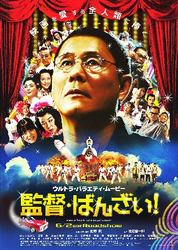

<!DOCTYPE HTML PUBLIC "-//W3C//DTD HTML 4.01 Transitional//EN" "http://www.w3.org/TR/html4/loose.dtd">
<html>
<head>
  <meta http-equiv="Content-Type" content="text/html; charset=utf-8">
  <meta http-equiv="Content-Script-Type" content="text/javascript; charset=utf-8">
  <meta http-equiv="Content-Style-Type" content="text/css">
  <link rel="stylesheet" type="text/css" href="./css/frame.css">
  <script src="./javascript/frame.js" type="text/javascript"></script>
  <title>Kantoku · Banzai!</title>
</head>
<body onclick="parent.hideall();">
<!--Original Text-->
  <div class="poster"></div>
  <h1 id="mtitle">Kantoku · Banzai!</h1>
  <br><p><b>Year: </b>2007</p>
  <br><p><b>Genre: </b> </p><p id="genre">Comedy, Drama</p>
  <br><p id="category"><b>Category: </b>Movie</p>
  <br><p id="imdbrating"><b>IMDB Rating: </b>6,5 (DINO Rating: 6,5)</p>
  <br><p id="url"><b>IMDB Link: </b><a target="_blank" href="http://www.imdb.com/title/tt0996435/ http://www.allmovie.com/movie/glory-to-the-filmmaker%21-v411766/ http://www.rottentomatoes.com/m/kantoku-banzai-glory-to-the-filmmaker/">http://www.imdb.com/title/tt0996435/ http://www.allmovie.com/movie/glory-to-the-filmmaker%21-v411766/ http://www.rottentomatoes.com/m/kantoku-banzai-glory-to-the-filmmaker/</a></p>
  <br><p id="country"><b>Country: </b>Japan</p>
  <br><p id="langs"><b>Language: </b></p>
  <br><p id="directors"><b>Director: </b>Takeshi Kitano</p>
  <br><p id="writers"><b>Writer: </b>Takeshi Kitano</p>
  <br><p id="composers"><b>Composer: </b>Shinichirô Ikebe</p>
  <br><p id="producers"><b>Producer: </b>Makoto Kakurai, Masayuki Mori, Takio Yoshida</p>
  <br><p id="actors"><b>Actors: </b>Takeshi Kitano, Tôru Emori, Kayoko Kishimoto, Anne Suzuki, Keiko Matsuzaka, Yoshino Kimura, Kazuko Yoshiyuki, Yuki Uchida, Akira Takarada, Yumiko Fujita, Ren Osugi, Susumu Terajima, Naomasa Musaka, Tetsu Watanabe, Rakkyo Ide, Morooka Moro, Shun Sugata, Tamotsu Ishibashi, Masahiro Chôno, Hiroyoshi Tenzan, Masatô Ibu, Shunsuke Itô, Shôken Kunimoto, Tôgi Makabe, Yoshiyuki Morishita, Takashi Nishina, Masahiro Okamoto, Tarô Suwa</p>
  <br><p><b>Description: </b>Takeshi Kitano plays a version of himself in which he&#039;s a struggling director cycling through a number of different genres in an effort to complete his latest project.</p>
  <br><p><b>Comments: </b></p>
  <br><p><b>Duration: </b>108&nbsp;minutes (at 23.976 frames per second)</p>
  <br><p><b>File path: </b>Z:\03780 - Glory to the Filmmaker! - Kantoku  Banzai! (2007) [HS-DVDRip]\Kantoku - Banzai!.avi</p>
  <br><p><b>Filesize: </b>808&nbsp;<abbr title="Megabyte">MB</abbr></p>
  <br><p><b>Video: </b>XviD -&nbsp;resolution:&nbsp;576x320</p>
  <br><p><b>Audio: </b>
  <ul class="sound">
    <li>> (mp3, stereo)</li>
  </ul></p>
  <br><p><b>Subtitles: </b>English, English Hardsubbed</p>
  <script type="text/javascript">
  <!--
  linkrevive();
  removeemptyfields();
  parent.focuslink("index_files/movie19262.html");
  // End -->
  </script>
</body>
</html>
